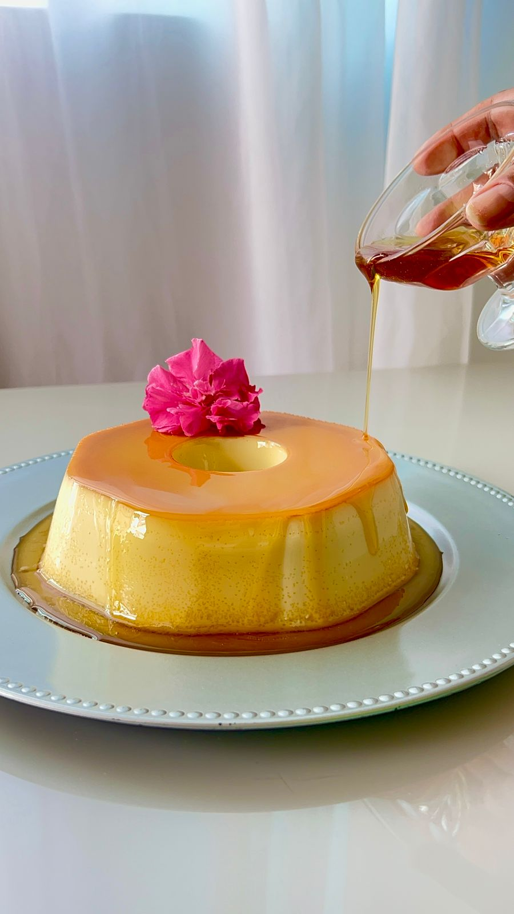
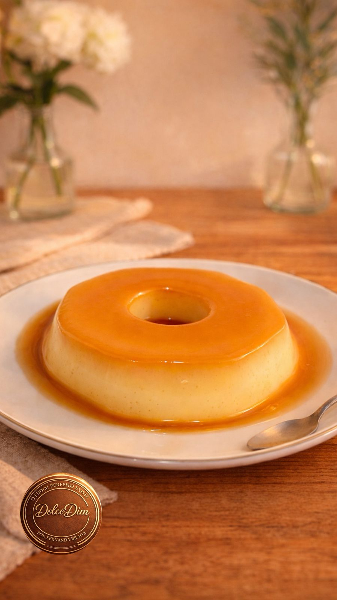
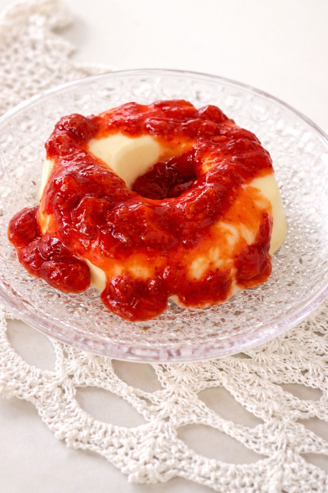
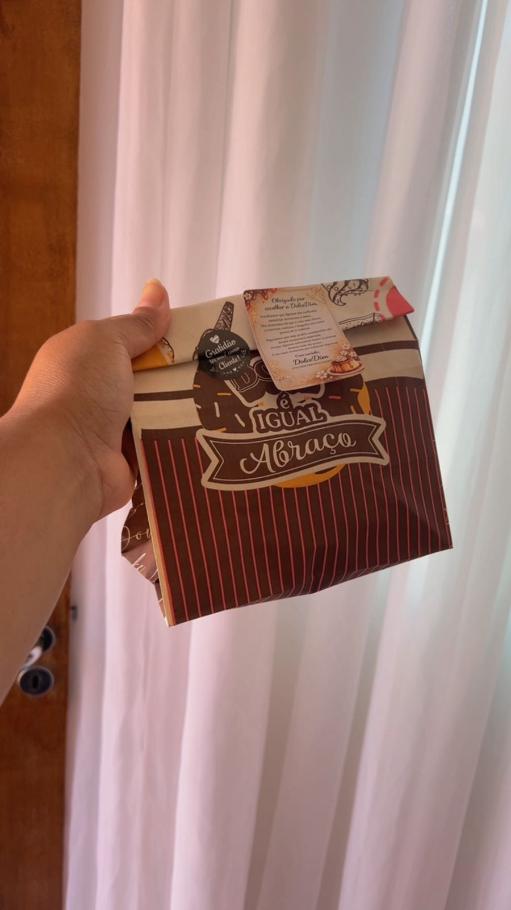
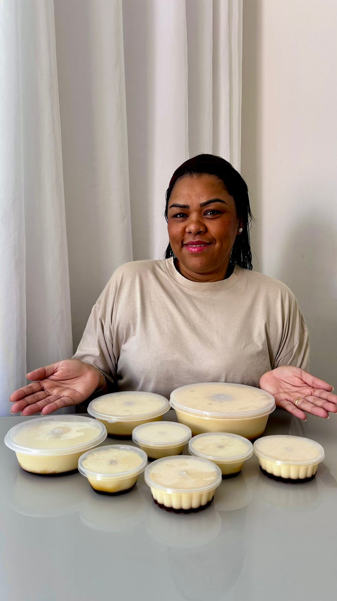
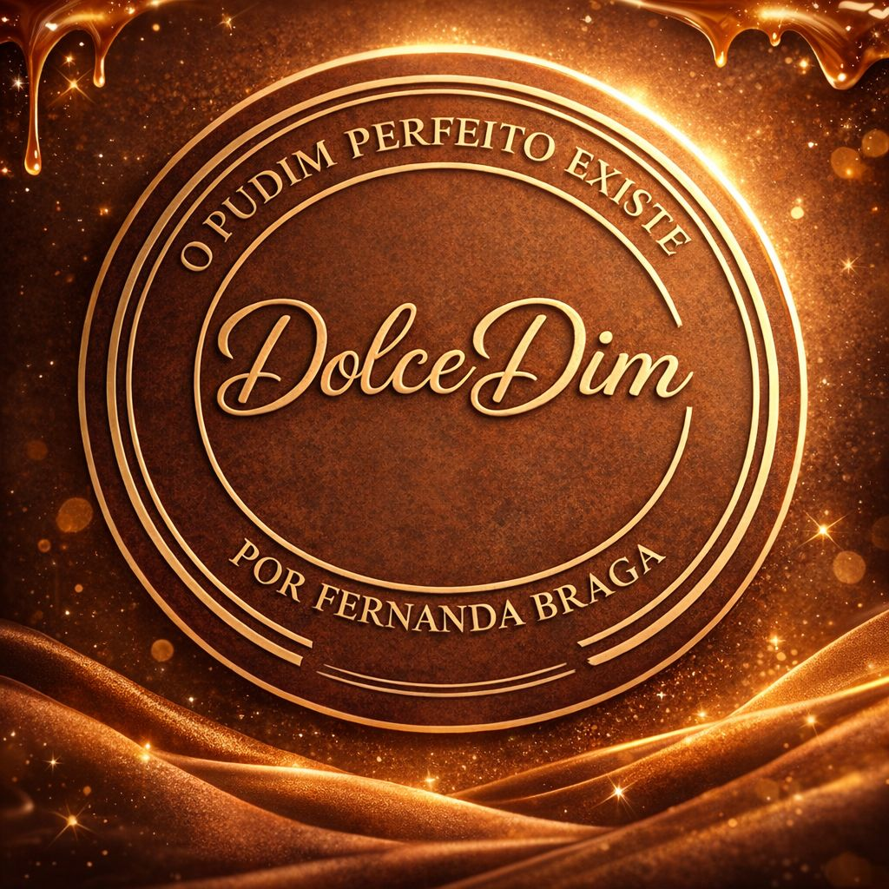

Por Fernanda Braga
Pudins artesanais com textura irretocável — lisinhos, sem bolhas, sem furinhos. Uma experiência sensorial que começa na aparência e se confirma em cada colherada.




A DolceDim nasceu de uma insatisfação com pudins comuns — cheios de furinhos, de bolhas, sem personalidade. Fernanda Braga decidiu que o pudim perfeito não era um mito: era uma receita a ser descoberta.
Após meses de pesquisa e refinamento, surgiu o método DolceDim — que garante uma superfície impecável, textura sedosa e sabor profundo em cada tamanho, de 120g a 1kg.
Nossa marca registrada. Superfície perfeita, textura sem bolhas.
Leite integral, ovos frescos e calda artesanal sem atalhos.
Entregamos como se fosse um presente — porque é.
De 120g a 1kg para cada momento — solo ou em família.
Cada receita foi desenvolvida com obsessão — para que cada tamanho, cada sabor, seja simplesmente perfeito.
Sabor Clássico
O clássico reimaginado. Calda de caramelo artesanal dourada, textura de seda, sabor equilibrado entre o doce do leite condensado e o aroma da baunilha. Irretocável. Exatamente como deve ser.
Exclusivo DolceDim
Pudim sedoso de chocolate branco, com calda de frutas vermelhas preparada artesanalmente — morango, amora e framboesa em equilíbrio perfeito. A acidez da calda contrasta com a doçura suave do pudim. Uma experiência sofisticada e inesquecível.
Em breve
Um pudim de doce de leite artesanal, com aquela cremosidade profunda que abraça o paladar. A mesma textura impecável da DolceDim — lisinha, sem furinhos — agora com o sabor mais aconchegante do Brasil. Em breve disponível em todos os tamanhos.
Me avise quando lançarEm breve
A cremosidade do pudim perfeito em versão gelada. Geladinhos com sabor autêntico de pudim — bem cremosos, bem gelados, bem DolceDim. Uma nova forma de se apaixonar pelo mesmo sabor que você já ama. Em breve disponível para encomenda.
Me avise quando lançarEm breve
Em desenvolvimento. Um pudim de chocolate belga 70% cacau, com textura absolutamente perfeita, para quem busca o máximo em sofisticação e intensidade. Em breve disponível em todos os tamanhos.
Me avise quando lançar
Professora & Fundadora · DolceDim
Fernanda Braga é professora — e como toda boa professora, ela não aceita fazer nada pela metade. Antes de criar a DolceDim, atuou como empreendedora no mercado digital, onde aprendeu que construir algo com significado exige método, consistência e muita coragem.
Foi nessa mesma escola que ela trouxe para a cozinha o rigor de quem ensina: pesquisou, testou, errou e refinou até chegar numa receita que entregasse o que sempre prometeu — um pudim verdadeiramente perfeito. Sem furinhos. Sem bolhas. Sem desculpas.
A DolceDim não é só um produto. É a prova de que recomeçar com propósito — trocando o digital pelo artesanal, a tela pela forma — pode gerar algo único. Cada pudim que sai das mãos de Fernanda carrega a mesma dedicação que ela coloca em tudo: a de quem quer, de verdade, fazer a diferença.
Fernanda Braga

A essência da DolceDim"Nunca tinha visto um pudim tão lindo e tão gostoso. A superfície é perfeita — lisinha, brilhante. E o sabor então... parece que dissolve na boca. A DolceDim mudou meu conceito de pudim."
"Pedi o de chocolate branco com frutas vermelhas para um jantar especial. Todo mundo parou para olhar antes de comer — lindo demais. E o sabor é sofisticado, equilibrado. Me pediram o contato da Fernanda na hora."
"Comprei o de 1kg para o aniversário da minha mãe. Ela que sempre criticava os furinhos dos pudins ficou completamente impressionada. Foi o doce mais elogiado da festa. Já encomendei o próximo."
Faça seu pedido pelo WhatsApp com antecedência — cada pudim é preparado individualmente, com o cuidado que você merece.
"O pudim perfeito existe. E tem um endereço."
— DolceDim, por Fernanda Braga